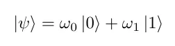
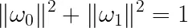
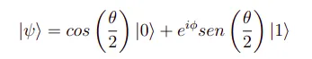
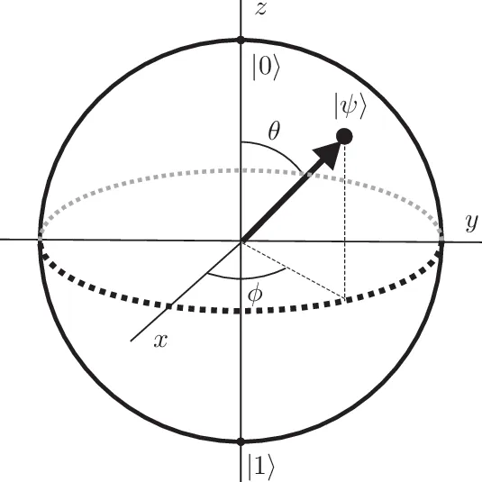
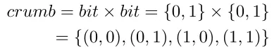
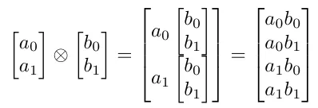

No século XX, a humanidade passou por uma fase de intenso desenvolvimento tecnológico, coisas nunca antes pensadas se tornaram realidades e mudaram todo o contexto e o modo de vida da sociedade. Entre essas diversas inovações aquelas que sem dúvida marcaram a nossa história foram o advento da eletricidade e da computação.
Após a publicação em 1936 do artigo a Máquina de Turing, escrito pelo matemático britânico Alan Turing, os estudos sobre computação foram impulsionados e diversos computadores foram surgindo, primeiramente mecânicos e pouco tempo depois digitais. Desde então os computadores vem se tornando cada vez menores e mais rápidos, no entanto continuam seguindo a mesma lógica de funcionamento proposta pelo matemático. Seguir essa lógica implica que os computadores podem resolver problemas que uma Máquina de Turing resolveria. Entretanto, é válido ressaltar que já em 1936, a tese de Church-Turing mostrou que a Máquina de Turing é limitada a resolver problemas chamados computáveis, os quais vemos de costume em automações e programas no geral.
Além disso, os computadores atuais em sua maioria são digitais, sendo assim, são dispositivos eletrônicos que possuem em seus circuitos lógicos apenas dois estados: ligado ou desligado, verdadeiro ou falso, 1 ou 0, corrente elétrica presente ou corrente elétrica ausente. Portanto, são necessários componentes eletrônicos que assumem esses dois estados e, quanto mais desses componentes confinados em um menor espaço, em teoria, maior será o poder computacional. O problema com essa abordagem é que existe um limite físico, portanto chegará um dia em que será impossível diminuir o tamanho desses componentes sem esbarrar em fenômenos do reino quântico. Tendo em vista isso, outras abordagens de computação foram surgindo, entre elas a computação com DNA, a Máquina de Turing não determinística, e a computação quântica, que explicaremos em mais detalhes adiante.
A computação quântica, como o nome sugere, se utiliza de comportamentos quânticos para a computação, logo, é necessário primeiramente entendermos alguns conceitos e fenômenos da mecânica quântica. Tudo começou quando Thomas Young, por volta de 1901, realizou o experimento da fenda dupla*, experimento no qual partículas elementares como fótons ou elétrons são “arremessados” contra uma estrutura que possui duas fendas. A partir dos resultados inesperados desse experimento foi compreendido que quando se trata de partículas elementares, ou seja, a nível quântico, o comportamento e os fenômenos que ocorrem se diferem completamente das previsões e cálculos físicos tradicionais.
Visto que nenhuma outra área de estudo conseguia explicar tais fenômenos, foi necessária a criação de uma nova disciplina, a mecânica quântica. O princípio fundamental da mecânica quântica, também oriundo do fenômeno tratado no experimento, é a sobreposição quântica, que diz que um sistema físico, como um elétron por exemplo, existe parcialmente e simultaneamente em todos os estados teoricamente possíveis antes de ser medido.
Outro fenômeno, o emaranhamento ou entrelaçamento quântico* é quando dois ou mais objetos se conectam fortemente de forma que uma parte não pode ser analisada adequadamente sem que a outra parte seja igualmente afetada, e isso ocorre independentemente da distância entre esses objetos. Imaginemos dois elétrons emaranhados, ou seja, com propriedades interligadas, sendo assim, se um elétron possui spin up – uma propriedade do comportamento do elétron em meio a um campo magnético – o outro elétron emaranhado possuirá spin down, e, como dito anteriormente, isso independe da distância desses elétrons.
Dessa forma, supondo dois objetos emaranhados, ao analisarmos a propriedade de apenas um único objeto já saberemos de antemão a propriedade de ambos os objetos, ou seja, em termos de computação, precisaremos processar apenas uma parte dos dados.
Entendidos alguns fenômenos envolvidos, é possível introduzir o conceito de qubit. O qubit é uma unidade de informação quântica que, diferente dos bits tradicionais, pode assumir os valores 0, 1 ou uma sobreposição de ambos. Sendo assim, tem sua informação descrita por um vetor de espaço bidimensional sobre números complexos da forma:
Onde representa o estado do qubit,  e  são os possíveis valores e α e β são geralmente números complexos.
Outra importante diferença entre os bits e os qubits é que qubits podem estar entrelaçados entre si. Sendo assim, de acordo com a quantidade de qubits entrelaçados e o modo como são usados, a computação quântica, quando comparada com a tradicional, pode atingir valores extraordinários:
Podendo ser exponencialmente mais poderosos que os bits tradicionais, os qubits abrem margem para vários problemas antes tidos como inviáveis computacionalmente. Em 1993, o estadunidense Peter Shor formulou um algoritmo quântico capaz de decompor um número com muitos algarismos em seus fatores primos, o qual foi nomeado como algoritmo de Shor. O ponto chave é que criptografias complexas, usadas na segurança dos nossos dados, são justamente baseadas nessa fatoração, visto que a quebra da criptografia seria inviável computacionalmente. Porém, essa não é uma realidade para computadores quânticos, que por meio do algoritmo de Shor conseguiriam quebrar uma criptografia em tempo polinomial em relação ao número de bits.
Entretanto nem tudo está perdido, embora a criptografia atual esteja com seus dias contados, a computação quântica torna possível o surgimento de uma nova criptografia, a criptografia quântica. Muito mais segura que qualquer outro método de criptografia utilizado nas comunicações atuais, a criptografia quântica destaca-se por não necessitar de comunicações secretas prévias, como envio de chaves, pois a sua segurança se baseia em leis físicas. A maneira como essa criptografia é implementada diverge entre os existentes protocolos quânticos de comunicação, porém, a ideia principal é a utilização de um sistema físico entre os usuários do canal de comunicação, assim, caso algum intruso tente interceptá-lo, o estado quântico desse sistema será quebrado, tornando possível a identificação de uma invasão. Portanto, ainda que considerado um invasor com poder computacional ilimitado, essa criptografia permanece segura.
Além da criptografia, incríveis resultados em algoritmos de busca e otimização, simulação de sistemas quânticos e solução de sistemas lineares serão possíveis com o advento dessa nova tecnologia que em breve causará seu impacto no mundo.
Experimento da fenda dupla Emaranhamento quânticoComputação quântica é um campo multidisciplinar que compreende aspectos da ciência da computação, da física e da matemática e que utiliza a mecânica quântica para resolver problemas complexos mais rapidamente do que em computadores tradicionais. O campo da computação quântica inclui pesquisa de hardware e desenvolvimento de aplicações. Os computadores quânticos são capazes de resolver certos tipos de problemas mais rapidamente do que os computadores tradicionais, aproveitando os efeitos da mecânica quântica, como superposição e interferência quântica. Algumas aplicações em que os computadores quânticos podem fornecer esse aumento de velocidade incluem Machine Learning (ML), otimização e simulação de sistemas físicos. Eventuais casos de uso podem ser a otimização de portfólios em finanças ou a simulação de sistemas químicos, resolvendo problemas que atualmente são impossíveis até mesmo para os supercomputadores mais poderosos do mercado.
Atualmente, nenhum computador quântico pode executar uma tarefa útil de forma mais rápida, barata ou eficiente quando comparado a um computador tradicional. A vantagem quântica está no limiar em que construímos um sistema quântico que pode realizar operações que nem mesmo o melhor computador tradicional consegue simular em um período razoável.
A mecânica quântica é a área da física que estuda o comportamento das partículas em um nível microscópico. Em níveis subatômicos, as equações que descrevem como as partículas se comportam são diferentes daquelas que descrevem o mundo macroscópico ao nosso redor. Os computadores quânticos aproveitam esses comportamentos para realizar cálculos de uma maneira completamente nova.
Bits quânticos, ou qubits, são representados por partículas quânticas. A manipulação de bits quânticos por dispositivos de controle é a essência da capacidade de processamento de um computador quântico. Bits quânticos em computadores quânticos são análogos aos bits em computadores tradicionais. Em sua essência, o processador de uma máquina tradicional realiza todo o seu trabalho ao manipular bits. De forma semelhante, o processador quântico realiza todo o seu trabalho ao processar bits quânticos.
Na computação clássica, o bit corresponde a um sinal eletrônico que está positivo ou negativo. O valor do bit clássico pode ser um (positivo) ou zero (negativo). No entanto, como o bit quântico é baseado nas leis da mecânica quântica, ele pode ser colocado em uma superposição de estados.
Um computador quântico funciona usando princípios quânticos. Os princípios quânticos requerem um novo dicionário de termos para serem totalmente compreendidos. Os termos incluem superposição, entrelaçamento e decoerência. Vamos entender esses princípios a seguir.
A superposição afirma que, assim como as ondas na física clássica, você pode adicionar dois ou mais estados quânticos e o resultado será outro estado quântico válido. Por outro lado, você também pode representar cada estado quântico como uma soma de dois ou mais estados distintos. Essa superposição de bits quânticos fornece aos computadores quânticos seu paralelismo inerente, permitindo que processem milhões de operações simultaneamente.
O entrelaçamento quântico ocorre quando dois sistemas se ligam tão intimamente que o conhecimento sobre um fornece a você conhecimento imediato sobre o outro, não importa quão distantes eles estejam. Os processadores quânticos podem obter conclusões sobre uma partícula medindo outra. Por exemplo, eles podem determinar que, se um bit quântico tem rotações ascendentes, o outro sempre terá rotações descendentes e vice-versa. O entrelaçamento quântico permite que os computadores quânticos resolvam problemas complexos mais rapidamente.
Quando um estado quântico é medido, a função de onda colapsa e você mede o estado como zero ou um. Nesse estado conhecido ou determinístico, o bit quântico atua como um bit clássico. O entrelaçamento corresponde a capacidade dos bits quânticos correlacionarem seu estado com outros bits quânticos.
A decoerência é a perda do estado quântico em um bit quântico. Fatores ambientais, como a radiação, podem causar o colapso do estado quântico dos bits quânticos. Um dos grandes desafios de engenharia na construção de um computador quântico é projetar vários recursos que tentam retardar a decoerência do estado, como a construção de estruturas especiais que protegem os bits quânticos de campos externos.
Os computadores quânticos têm hardware e software, de forma semelhante a um computador tradicional.
O hardware quântico tem três componentes principais.
O plano de dados quânticos é a essência do computador quântico e inclui os bits quânticos físicos e as estruturas necessárias para mantê-los no lugar.
O plano de controle e medição converte os sinais digitais em sinais analógicos ou de controle de ondas. Esses sinais analógicos executam as operações nos bits quânticos do plano de dados quânticos.
O plano de processador de controle implementa o algoritmo quântico ou a sequência de operações. O processador host interage com o software quântico e fornece um sinal digital ou uma sequência de bits clássicos para o plano de controle e medição.
O software quântico implementa algoritmos quânticos exclusivos usando circuitos quânticos. Um circuito quântico é uma rotina de computação que define uma série de operações quânticas lógicas nos bits quânticos subjacentes. Os desenvolvedores podem usar várias ferramentas e bibliotecas de desenvolvimento de software para programar código de algoritmos quânticos.
Ainda não foi apresentada a melhor maneira de se construir um computador quântico tolerante a falhas. Assim, diversas empresas e grupos de pesquisa estão investigando diferentes tipos de bits quânticos. Veja a seguir breves exemplos de algumas dessas tecnologias de bits quânticos.
Um computador quântico baseado em portas quânticas é um dispositivo que recebe dados de entrada e os transforma de acordo com uma operação unitária predefinida. Geralmente, a operação é representada por um circuito quântico e é análoga às operações de portas em sistemas eletrônicos tradicionais. No entanto, as portas quânticas são totalmente diferentes das portas eletrônicas.
Computadores quânticos de íons aprisionados implementam bits quânticos usando estados eletrônicos de átomos carregados, denominados de íons. Os íons são confinados e suspensos acima da armadilha microfabricada usando campos eletromagnéticos. Sistemas baseados em íons aprisionados aplicam portas quânticas utilizando lasers para manipular o estado eletrônico do íon. Os bits quânticos de íons aprisionados usam átomos que vêm da natureza ao invés de fabricá-los sinteticamente.
A supercondutividade é um conjunto de propriedades físicas que você pode observar em certos materiais, como mercúrio e hélio, em temperaturas muito baixas. Nesses materiais, você pode observar uma temperatura crítica característica abaixo da qual a resistência elétrica é zero e os campos de fluxo magnético são expelidos. Uma corrente elétrica através do ciclo de um fio supercondutor pode persistir indefinidamente sem a necessidade de fontes de energia.
A computação quântica supercondutora corresponde a uma implementação de um computador quântico em circuitos eletrônicos supercondutores. Os bits quânticos supercondutores são criados com circuitos elétricos supercondutores que operam em temperatura criogênica.
Um processador quântico fotônico é um dispositivo que manipula a luz para realização de cálculos. Os computadores quânticos fotônicos usam fontes de luz quânticas que emitem pulsos de luz comprimidos, com equivalentes de bits quânticos que correspondem aos modos de um operador contínuo, como posição ou momento.
A tecnologia de bits quânticos de átomos neutros é semelhante à tecnologia de íons aprisionados. No entanto, ela usa luz em vez de forças eletromagnéticas para aprisionar o bit quântico e mantê-lo em posição. Os átomos não estão carregados e os circuitos podem operar à temperatura ambiente.
Um átomo de Rydberg corresponde a um átomo excitado que tem, em média, um ou mais elétrons distantes do núcleo. Os átomos de Rydberg têm várias propriedades peculiares, incluindo uma resposta exagerada a campos elétricos e magnéticos, bem como vida longa. Quando usados como bits quânticos, eles oferecem interações atômicas fortes e controláveis que você pode ajustar ao selecionar diferentes estados.
O recozimento quântico usa um processo físico para colocar os bits quânticos de um sistema quântico em um mínimo absoluto de energia. Em seguida, o hardware altera levemente a configuração do sistema para que seu cenário de energia reflita o problema que precisa ser resolvido. A vantagem dos recozedores quânticos é que o número de bits quânticos pode ser muito maior do que os disponíveis em um sistema baseado em portas quânticas. No entanto, seu uso é limitado apenas a casos específicos.
O machine learning (ML) corresponde ao processo de análise de grandes quantidades de dados para ajudar os computadores a fazer melhores previsões e decisões. A pesquisa em computação quântica estuda os limites físicos do processamento de informações e está abrindo novos caminhos na física fundamental. Essa pesquisa conduz avanços em muitos campos da ciência e da indústria, como a química, a otimização e a simulação molecular. Também é uma área de interesse crescente aos serviços financeiros para previsão dos movimentos do mercado e aprimoramento das operações de manufatura.
A computação quântica pode melhorar a pesquisa e o desenvolvimento, a otimização da cadeia de suprimentos e a produção. Por exemplo, você pode aplicar a computação quântica para diminuir os custos relacionados ao processo de fabricação e diminuir os tempos de ciclo otimizando elementos como o planejamento de caminhos em processos complexos. Outra aplicação é a otimização quântica de carteiras de empréstimos para que os credores possam liberar capital, reduzir as taxas de juros e melhorar suas ofertas.
O esforço computacional necessário para simular sistemas com precisão escala exponencialmente com a complexidade das moléculas e materiais de medicamentos. Mesmo usando métodos de aproximação, os supercomputadores atuais não conseguem atingir o nível de precisão que essas simulações exigem. A computação quântica tem potencial para resolver alguns dos problemas computacionais mais desafiadores enfrentados na química, permitindo que a comunidade científica faça simulações químicas que são intratáveis atualmente. Por exemplo, a Pasqal desenvolveu seu software computacional QUBEC para executar simulações químicas. O QUBEC automatiza o trabalho complexo necessário para a execução de tarefas computacionais quânticas, desde o provisionamento automático da infraestrutura de computação até a execução de cálculos clássicos de pré e pós-processamento, bem como a execução de tarefas de mitigação de erros.
Se você desejar experimentar a computação quântica, pode começar com um emulador de hardware quântico em sua máquina local. Os emuladores são softwares regulares que imitam o comportamento quântico em um computador tradicional. Eles são previsíveis e permitem que você veja estados quânticos. Eles são úteis se você deseja testar seus algoritmos antes de investir em tempo de hardware quântico. No entanto, eles não podem recriar o comportamento quântico real.
Você também pode usar um serviço de computação quântica em nuvem para programar em um verdadeiro computador quântico sem investir em hardware de alto custo, como por exemplo o Amazon Bracket